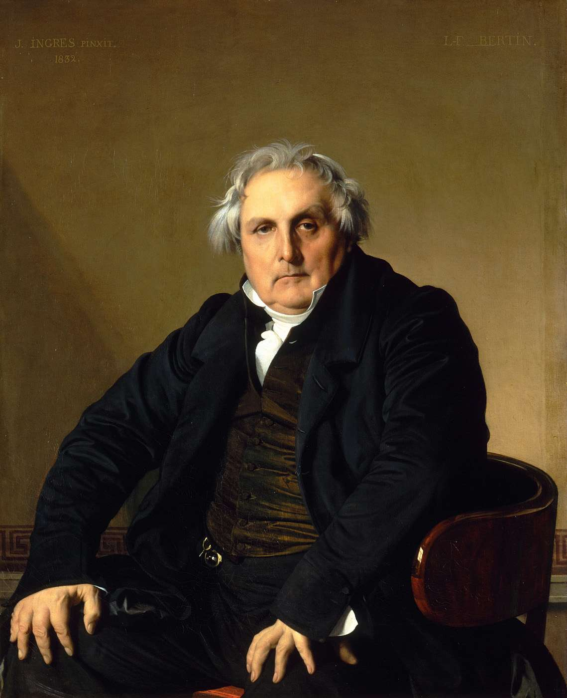

Предыдущая часть - "Классицизм"
Этот стиль называют также «неоклассицизм». Он формировался преимущественно в лоне французской культуры, под сильным влиянием идей Просвещения. По сравнению с искусством ХVII в. здесь более отчётливо зазвучали идеи гражданского мужества, патриотизма, самопожертвования ради блага Родины. Но вместе с тем продолжается разработка античных мотивов, которые приобретают характер утончённо-рафинированной эротики, не свойственной ранним стадиям классицизма. Этим отличаются поздние фазы антикизирующих стилей.
Виднейшие представители неоклассицизма – Ж.- Л. Давид и Ж.- Д. Энгр.
Жак – Луи Давид (1748 – 1825)
Основоположник французского неоклассицизма. В начале творческого пути работал в стиле рококо, но после учёбы в Риме (1775 – 1780) под влиянием искусства Древнего Рима выработал строгую эпическую манеру. В результате Давид оказался во главе течения, ставшего реакцией на «вольности» рококо и стремившегося выразить героические свободолюбивые идеалы через образы античности, что оказалось весьма созвучно царившим во Франции того времени общественным настроениям. Жак Луи Давид создавал полотна, воспевавшие гражданственность, верность долгу, героизм, способность к самопожертвованию. Активно участвовал в революционном движении буржуазии против монархии. В 1792 г. он был избран депутатом Национального конвента, голосовал за смерть короля Людовика ХVI. Примкнул к радикально-экстремистскому крылу революционеров во главе с Маратом и Робеспьером. В 1794 г. после термидорианского переворота Давид был заключён в тюрьму за революционные взгляды.
В 1797 г. стал свидетелем торжественного въезда в Париж Бонапарта и с тех пор становится его пылким сторонником. В 1804 г. Наполеон назначил Давида «первым художником». Давид прославил деяния Наполеона в ряде картин, которые свидетельствуют о переходе Художника от строгого классицизма к романтизму.
Жан Огюст Доминик Энгр (1780 – 1867)
Его называют «общепризнанным лидером академизма ХIX века».
Он – ученик Рафаэля и Давида. Директор Французской академии в Риме. Придворный художник французского императора Наполеона I.
Родился Энгр в г. Монтебан недалеко от Тулузы. Отец – скульптор и живописец – обучил сына рисованию, пению и игре на скрипке. Дальнейшее обучение получил в Тулузе, в мастерской Академии изящных искусств. После этого отправился в столицу, где его учителем стал Жак Луи Давид, передавший талантливому юноше основы искусства живописи.
В 1806 г. Энгр уезжает в Италию и живёт там 18 лет. Затем – Париж, затем – опять Рим. В Риме Энгр получает должность директора Римской французской Академии, но в 1841 г. навсегда возвращается в Париж, где на вершине славы и признания доживает до своей смерти в 1867 году.
Энгр был ревностным поклонником Наполеона I (Бонапарта) и посвятил ему множество картин. Особенно отличается от других «Портрет Наполеона I» 1806 г., выставленный в Париже, в Музее армии.
На этой картине Художник уподобил императора божеству – одновременно Юпитеру и фигуре Бога-Отца из Гентского алтаря Яна Ван Эйка (1432 г.) Из-за массы одежд и покровов трудно разглядеть лицо императора, лишённое выражения и похожее скорее на маску. Многим современникам образ императора показался неуместным, поскольку они желали видеть в императоре демократа и любимца народа, а не идолоподобную фигуру.
После этого Энгр создал ещё ряд парадных портретов императора по его заказу (1805 – 1812). По-своему решил он также «вечную» тему обнажённой женской натуры – добавил своей одалиске три лишних позвонка.
Думаю, что самая актуальная, «живая» работа Энгра – портрет Бертена. Её можно было бы назвать: «Буржуазия утверждается», а вместе с ней смело пробиваются к свету ростки реализма в искусстве.

Л. Миронова, 15.10.2016